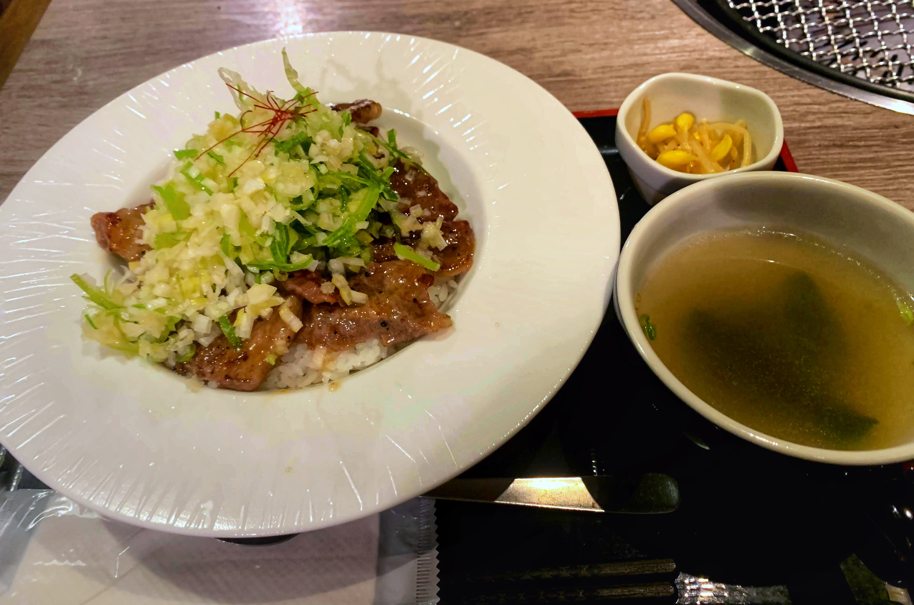
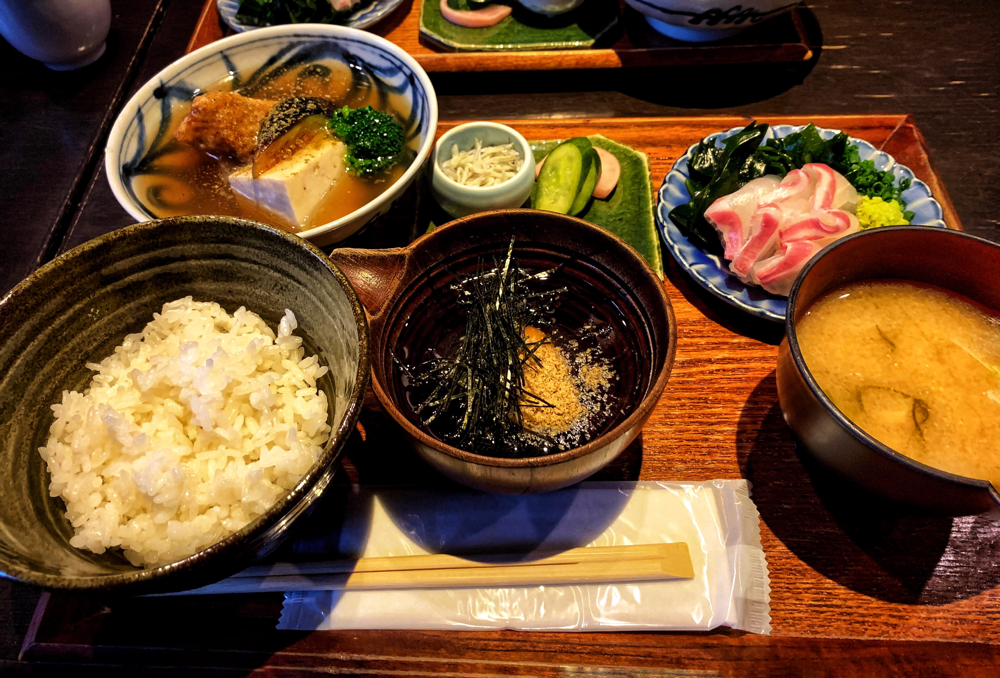

浜松町lunch top3
No1.焼肉 2+9
１６００円で食べられるネギ塩カルビ丼 ランチにしてはお高めの金額設定ですが損はさせません。 他にもカルビ丼、牛タン定食等メニューがたくさんあるので是非一度ご賞味あれ！
No2.旬彩 鯛樹
ランチは宇和島産の鯛飯のみ、ヘルシーな定食で女性にも大人気。 店内はシックな雰囲気で落ち着いてお食事ができます。１２時台は混み合うので早めに行くのがおすすめ！
No3.とんかつ 大門 檍

蒲田で人気なとんかつ屋さんが浜松町にも！おすすめメニューは特上ロースかつ定食。 レアの状態でサクサクに挙げられているロースは４つの塩をつけえいただくことができます。作りたてのテイクアウトもやってます。